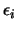
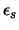
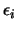
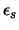
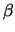
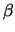

Next: Native Star Files
Up: GCX User's Manual
Previous: Noise Modelling
Contents
Robust Averaging
A robust averaging algorithm is implemented by GCX and used in
several places, most notably for zeropoint fitting by the aperture
photometry and multiframe reduction routines.
The algorithm calculates the robust average of a number of values
(for the zeropoint routines, these are the differences between the
standard and instrumental magnitudes of standard stars).
The data used consists of the values we want to calculate, and
the estimated error of each value. For fitting frame zeropoints
they are:
where  is the standard magnitude,
is the standard magnitude,  is the instrumental magnitude,
 is the estimated error of the instrumental magnitude,
 is the error of the standard magnitude of each star.
Each star is assigned a natural weight, calculated as
is the instrumental magnitude,
 is the estimated error of the instrumental magnitude,
 is the error of the standard magnitude of each star.
Each star is assigned a natural weight, calculated as
We start with a very robust estimate of the average:
and calculate the residuals of each value:
and the standard errors:
The expected value of each standard error is 1. We can identify
possible outliers by their large standard errors. A simple way to
treat outliers is to just exclude from the fit any value that has a
standard error larger than a certain threshold. This has the
disadvantage that small changes in the values can cause large jumps in
the solution if an outlier just crosses the threshold. Instead, we
adjust the weights of the data points to reduce the outliers'
contribution to the solution:
 |
(B.7) |
The weighting function reduces the weight of values that have residuals  times larger
than expected to one half. Of course values with even larger residuals are downweighted even
more. The parameter  tunes the ``sharpness'' of the weighting
function.B.1A new estimate of the average is produced by:
times larger
than expected to one half. Of course values with even larger residuals are downweighted even
more. The parameter  tunes the ``sharpness'' of the weighting
function.B.1A new estimate of the average is produced by:
The residual calculation, weighting and average estimating are
iterated until the estimate doesn't change.
Finally, the error for the estimated parameters is calculated.
the error of the zero point is:
and the mean error of unit weight is:
where  is the number of standard stars. The mean error of unit weight
is 1 in the ideal case (when all the errors are estimated correctly). A significantly
larger value should raise doubts about the error estimates.
is the number of standard stars. The mean error of unit weight
is 1 in the ideal case (when all the errors are estimated correctly). A significantly
larger value should raise doubts about the error estimates.
Next: Native Star Files
Up: GCX User's Manual
Previous: Noise Modelling
Contents
Radu Corlan
2004-12-07